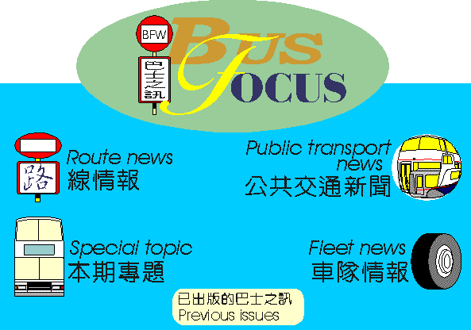
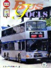

|
The Homepage of BUS FAN WORLD is kindly sponsored by 巴 士 迷 世 界 網 頁 是 由 ABC NET 慷 慨 贊 助 |
|---|
[ 主網頁 Home ] [ BUS FOCUS ] [ BFW Newsletter ]
[ About BFW ] [ Bus Links ] [ Apply Membership ]


last update 1 June 1997

本刊版權所有，無巴士迷世界行政委員會批準，不得翻印或轉載任何內容
 |
第 二 十 期 巴 士 之 訊 |
|---|
|
The Homepage of BUS FAN WORLD is kindly sponsored by 巴 士 迷 世 界 網 頁 是 由 ABC NET 慷 慨 贊 助 |
|---|